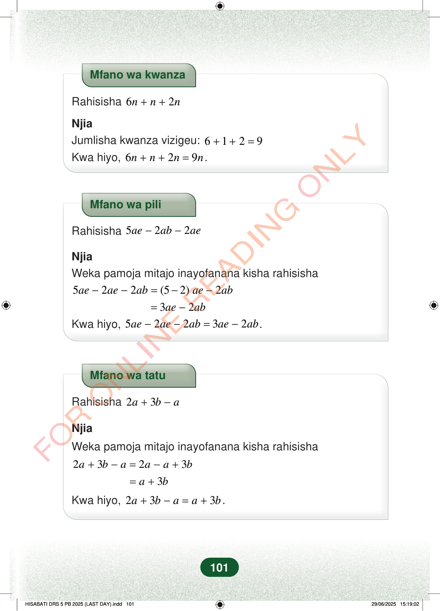

Mfano wa kwanzaRahisisha62nnn++NjiaJumlisha kwanza vizigeu:6129++=Kwa hiyo,629nnnn++=.Mfano wa piliRahisisha522aeabae−−NjiaWeka pamoja mitajo inayofanana kisha rahisisha522(52)2aeaeabaeab−−=−−32aeab=−Kwa hiyo,52232aeaeabaeab−−=−.Mfano wa tatuRahisisha23aba+−NjiaWeka pamoja mitajo inayofanana kisha rahisisha2323abaaab+−=−+3ab=+Kwa hiyo,233abaab+−=+.101
Mfano wa kwanza
Rahisisha 6 2 n n n + +
Njia Jumlisha kwanza vizigeu: 6 1 2 9 + + = Kwa hiyo, 6 2 9 n n n n + + = .
Mfano wa pili
Rahisisha 5 2 2 ae ab ae − −
Njia Weka pamoja mitajo inayofanana kisha rahisisha
5 2 2 (5 2) 2 ae ae ab ae ab − − = − −
3 2 ae ab = −
Kwa hiyo, 5 2 2 3 2 ae ae ab ae ab − − = − .
Mfano wa tatu
Rahisisha 2 3 a b a + −
Njia
Weka pamoja mitajo inayofanana kisha rahisisha
2 3 2 3 a b a a a b + − = − +
3 a b = +
Kwa hiyo,
2 3 3 a b a a b + − = + .
101
Mfano wa kwanza wa kurahisisha 6n + n + 2n. Vizigeu vinajumlishwa 6 + 1 + 2 kupata 9, hivyo jibu ni 9n.Mfano wa kwanzaRahisisha <math><mrow><mn>6</mn><mi>n</mi><mo>+</mo><mi>n</mi><mo>+</mo><mn>2</mn><mi>n</mi></mrow></math>NjiaJumlisha kwanza vizigeu: <math><mrow><mn>6</mn><mo>+</mo><mn>1</mn><mo>+</mo><mn>2</mn><mo>=</mo><mn>9</mn></mrow></math>Kwa hiyo, <math><mrow><mn>6</mn><mi>n</mi><mo>+</mo><mi>n</mi><mo>+</mo><mn>2</mn><mi>n</mi><mo>=</mo><mn>9</mn><mi>n</mi></mrow></math>.Mfano wa pili wa kurahisisha 5ae − 2ab − 2ae. Mitajo inayofanana ya ae inawekwa pamoja na kubaki 3ae − 2ab.Mfano wa piliRahisisha <math><mrow><mn>5</mn><mi>a</mi><mi>e</mi><mo>−</mo><mn>2</mn><mi>a</mi><mi>b</mi><mo>−</mo><mn>2</mn><mi>a</mi><mi>e</mi></mrow></math>NjiaWeka pamoja mitajo inayofanana kisha rahisisha5ae - 2ae - 2ab = (5 - 2)ae - 2ab= 3ae - 2abKwa hiyo, <math><mrow><mn>5</mn><mi>a</mi><mi>e</mi><mo>−</mo><mn>2</mn><mi>a</mi><mi>e</mi><mo>−</mo><mn>2</mn><mi>a</mi><mi>b</mi><mo>=</mo><mn>3</mn><mi>a</mi><mi>e</mi><mo>−</mo><mn>2</mn><mi>a</mi><mi>b</mi></mrow></math>.Mfano wa tatu wa kurahisisha 2a + 3b − a. Mitajo inayofanana inawekwa pamoja na jibu linakuwa a + 3b.Mfano wa tatuRahisisha <math><mrow><mn>2</mn><mi>a</mi><mo>+</mo><mn>3</mn><mi>b</mi><mo>−</mo><mi>a</mi></mrow></math>NjiaWeka pamoja mitajo inayofanana kisha rahisisha2a + 3b - a = 2a - a + 3b= a + 3bKwa hiyo, <math><mrow><mn>2</mn><mi>a</mi><mo>+</mo><mn>3</mn><mi>b</mi><mo>−</mo><mi>a</mi><mo>=</mo><mi>a</mi><mo>+</mo><mn>3</mn><mi>b</mi></mrow></math>.